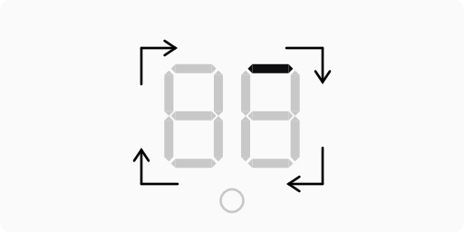

Qualiton 300B
User's Manual
Important Safety Instructions
Please read them before operating this equipment!
- Read these instructions.
- Keep these instructions.
- Heed all warnings.
- Follow all instructions.
- Improper installation may cause malfunction.
- Do not use this apparatus near water.
- Clean only with a dry cloth.
- Do not block any ventilation openings since this may lead to fire. Install in accordance with the manufacturer’s instructions.
- Do not install near any heat sources such as radiators, heat registers, stoves, or other apparatus (including amplifiers) that produce heat.
- Do not defeat the safety purpose of the polarized or grounding‑type plug. A polarized plug has two blades with one wider than the other. A grounding type plug has two blades and a third grounding prong. The wide blade or the third prong are provided for your safety. If the provided plug does not fit into your outlet, consult an electrician for replacment of the obsolete outlet.
- Connect mains power supply cord only to a mains socket outlet with a protective earthing connection.
- Be careful with appliance cables. Do not lead them across sharp surfaces, do not clam them together and do not leave them in a hanging position. Protect the power cord from being walked on or pinched particularly at plugs, convenience receptacles, and the point where they exit from the apparatus.
- You must not operate the appliance with damaged cables.
- Before powering up your amplifier, make sure protective cover, ports, plugs and cables are checked for intactness.
- Only use attachments / accessories specified by the manufacturer.
- Use only with the cart, stand, tripod, bracket, or table specified by the manufacturer, or sold with the apparatus. When a cart is used, use caution when moving the cart / apparatus combination to avoid injury from tip‑over.
- Unplug this apparatus during lightning storms or when unused for long periods of time.
- No user‑serviceable parts inside. Improper repair may lead to loss of warranty. Refer servicing to qualified service personnel.
- Servicing is required when the apparatus has been damaged in any way, such as power supply cord or plug is damaged, liquid has been spilled or objects have fallen into the apparatus, the apparatus has been exposed to rain or moisture, does not operate normally, or has been dropped.
- You must not start up damaged or faulty appliance. In case of any malfunction, unplug your amplifier immediately.
- In case of a malfunction, the protective cover must not be opened or removed.
- Do not expose this equipment to dripping or splashing and ensure that no objects filled with liquids, such as vases, are placed on the equipment.
- Do not touch the appliance or its mains cable with wet hands.
- In case of fire, you must not use water to extinguish the fire, even if the amplifier is switched off.
- The appliance may only be used by qualified adults or children above 14 years of age if supervised by a qualified adult.
- Keep the appliance out of the reach of children.
- Make sure your domestic animal does not lie or sit on the top of the appliance.
- If you do not use your amplifier for a long time, unplug the appliance carefully.
- To completely disconnect this equipment from the AC mains, disconnect the power supply cord plug from the AC receptacle.
- The mains plug of the power supply cord shall remain readily operable.
- Do not expose batteries to excessive heat such as sunshine, fire or the like.
- WARNING! To reduce risk of fire or electrical shock, do not expose this equipment to rain or moisture.
- CAUTION! To reduce the risk of electric shock, do not remove cover.
Markings
Marking |
Description |
|---|---|
| The exclamation mark within an equilateral triangle is intended to alert the user to the presence of important operating and maintenance (servicing) instructions in the literature accompanying the appliance. | |
| CAUTION! Hot Surface! Do Not Touch! Protective cover of the product may become hot when operating this product continuously. | |
| The crossed‑out wheeled bin is the European Union symbol for indicating separate collection for electrical and electronic equipment. This product contains electrical and electronic equipment which should be reused, recycled or recovered and should not be disposed of with unsorted regular waste. Please return the unit or contact the authorised dealer from whom you purchased this product for more information. | |
| The product meets the relevant directives and standards of the European Union. | |
| Supplied with alternating current (AC). | |
| Nominal supply voltage. | |
 |
Nominal supply frequency. |
Preface
Thank you for choosing our product to enrich your musical experiences. We appreciate your trust! Before installing your Qualiton 300B integrated stereo tube amplifier, please carefully review the User’s Manual. By using the amplifier as intended, you’ll enjoy an exceptional musical journey with reliable operation.
Technical Assistance and Service Information
If you ever have any questions about your Qualiton product, don’t hesitate to contact your local Qualiton Dealer. They are available to assist you. Additionally, if you or your dealer require further help, you can receive technical assistance from:
Audio-Hungary Ltd.
üè† 132 Derkovits Street, 4400 Ny√≠regyh√°za, Hungary
☎️ +36 42 446-688
✉️ E-mail
In case your Qualiton product requires service, it’s advisable to contact your local dealer first. You can also find the list of official Qualiton Service on our Service Repair page. However, if necessary, you can also directly reach out to us using the provided contact details.
In the Box
After unpacking the entire contents of the package, take a moment to verify that you have received all the included accessories.
- Qualiton 300B Integrated Amplifier
- Remote Control
- 2 x 12AX7EH Gold vacuum tubes
- 4 x 12AT7EH Gold vacuum tubes
- 4 x 300B EH vacuum tubes
- Standard Mains Cable
- PH2 Phillips Screwdriver
- Pair of Gloves
- User's Manual
Front Panel
-
Multifunction Control Knob
This knob serves multiple purposes:- Power On / Off: Allows the user to toggle the amplifier between stand-by mode and active operation.
- Input Selector: Enables the user to choose the desired input port.
- Volume: Adjusts the stereo listening level.
-
Status Display
The status display provides information about several key aspects:- Power Status: Indicates whether the amplifier is in stand-by mode or undergoing the turn-on procedure.
- Selected Input Port: Indicates which input port is currently active.
- Volume Value: Shows the current volume level.
- Brightness Level: Displays the brightness setting for the display itself.
Rear Panel
- Balanced Inputs
BALANCED INPUTS accept high level program source signals. - Line Inputs
Unbalanced LINE 1, 2, 3 and 4 INPUTS accept high level program source signals. - Subwoofer Output
SUB OUT sends unbalanced signals to power amplifier(s). - Right Speaker Outputs
0 - 4 \(\Omega\) -> Connect a 4 Ohm Loudspeaker.
0 - 8 \(\Omega\) -> Connect an 8 Ohm Loudspeaker. - Left Speaker Outputs
0 - 4 \(\Omega\) -> Connect a 4 Ohm Loudspeaker.
0 - 8 \(\Omega\) -> Connect an 8 Ohm Loudspeaker. - IEC appliance AC Inlet with Main Switch
Tech Specs
Electrical |
|
|---|---|
| Rated Output Power | 2 x 25 Watts @ 4 or 8 Ohms |
| Output Load Impedance | 4 or 8 Ohms |
| Number of Channels | 2 |
| Frequency Response | 5 Hz - 85 kHz (-3 dB, 1 Watt) 15 Hz - 70 kHz (-3 dB, 25 Watts) |
| Total Harmonic Distortion | < 0.5 % across the entire power spectrum, from milliwatts to rated output, spanning 20 Hz to 20 kHz. |
| Rated Power Bandwidth | 20 Hz - 20 kHz |
| Signal-to-Noise Ratio | > 105 dB below rated output 20 Hz - 22 kHz bandwidth, without weighting filter > 110 dB below rated output with A-weighting filter |
| Number of Outputs | 2 Unbalanced POWER OUT 1 Unbalanced SUB OUT |
| Number of Inputs | 4 Unbalanced STEREO IN 1 Balanced STEREO IN |
| Input Sensitivity (for rated output) |
0.65 Volts Unbalanced 0.65 Volts Balanced |
| Input Impedance | 10 000 Ohms Unbalanced 20 000 Ohms Balanced |
| Gain | +23.75 dB @ 4 Ohms +26.75 dB @ 8 Ohms |
| General | |
| Vacuum Tubes | 2 x 12AX7EH Gold 4 x 12AT7EH Gold 4 x 300B EH |
| Remote Control | Stand-By Volume Mute Input Selection Status Display Brightness |
| Power Requirement | 200 W idle 460 W max 1 W stand-by |
| Weight | xx kg |
| Dimensions | xx x xx x xx cm |
| Shipping Weight | xx kg |
| Shipping Dimensions | xx x xx x xx cm |
Block Diagram
Connection Diagram
Placement
- Ventilation
- Due to the vacuum tube construction, the amplifier may heat up during use. Therefore, choose an installation location where the appliance can be well ventilated. Do not cover the ventilation holes with items like tablecloths, curtains, newspapers, or books. Impaired ventilation can lead to overheating and irregular operation.
- Stacking Units
- Do not stack multiple units on top of each other. Proper spacing ensures efficient airflow and prevents overheating.
- Temperature Changes
- When relocating the appliance, be cautious of sudden temperature changes, as these can cause moisture condensation. Allow the amplifier to acclimate and evaporate any moisture before powering it up.
- Initial Installation
- Before the first installation, leave the amplifier in its designated location for at least 2 hours. After this period, you can power it up following the provided guide.
- Indoor Use Only
- The appliance is designed for indoor use. Do not operate it in wet or humid environments.
- Clearance
- Maintain a perimeter of at least 200 millimeters around your amplifier. Avoid placing other electrical devices or objects too close. Keep the appliance away from heating sources, radiators, dusty environment and flames.
- Maintain a perimeter of at least 200 millimeters around your amplifier. Avoid placing other electrical devices or objects too close. Keep the appliance away from heating sources, radiators, dusty environment and flames.
Installing Vacuum Tubes
- Remove the Protective Cover:
- Gently unlock and remove the Protective Cover from the amplifier. Be cautious not to scratch the device during this process.
- Insert the 300B Vacuum Tubes:
- Remove a 300B tube from its box.
- Carefully place it in one of the positions labeled “300B” on the amplifier.
- Ensure that the holes in the electron tube socket match the pins of the tube correctly. ⚠️
- Repeat the process for the remaining 300B tubes.
- Insert the 12AX7 Vacuum Tubes:
- Remove a 12AX7 tube from its box.
- Carefully place it in one of the positions labeled “12AX7 / ECC83” on the amplifier.
- Ensure that the holes in the electron tube socket match the pins of the tube correctly. ⚠️
- Repeat the process for the other 12AX7 tube.
- Insert the 12AT7 Vacuum Tubes:
- Take a 12AT7 tube from its box.
- Carefully place it in one of the positions labeled “12AT7 / ECC81” on the amplifier.
- Ensure that the holes in the electron tube socket match the pins of the tube correctly. ⚠️
- Repeat for the remaining 12AT7 tubes.
- Install the Protective Cover:
- Carefully put the protective cover back in place.
- Carefully put the protective cover back in place.
Using Third Party Vacuum Tubes
- Audio-Hungary Ltd. strongly advises against using any electron tubes in the Qualiton 300B integrated stereo amplifier other than the ones originally supplied with the device. These tubes have been carefully selected to ensure optimal performance and reliability.
- Important Note:
- Audio-Hungary Ltd. cannot and does not warrant against, and shall have no liability of any kind for any defects resulting from the use of vacuum tubes from third parties and such defects will void the warranty.
- Audio-Hungary Ltd. cannot and does not warrant against, and shall have no liability of any kind for any defects resulting from the use of vacuum tubes from third parties and such defects will void the warranty.
Automatic Bias System
- The Qualiton 300B features a sophisticated, fully automatic bias control system for the four power tubes. This circuit continuously monitors the behavior of each tube and regulates the bias voltages accordingly, ensuring the smallest possible output voltage noise while guaranteeing the highest degree of linearity of the output stage.
- Additionally, it prevents the sensitive, high-permeability output transformer cores from saturating by precisely equalizing the quiescent currents of the power tubes.
- Furthermore, the bias system incorporates a built-in soft-start function, which prevents the tubes from drawing excessive current during start-up and eliminates pops and noises.
- The result is that no further adjustment is required once the electron tubes supplied with the unit have been installed; the Automatic Bias System takes care of everything.
Status Display
Overview
The microprocessor-based Input Selector and Volume Control System features a Status Display. The display material is scratch-resistant smoked plexiglass. By default, the top section of the Status Display indicates the volume value. During user action, the display becomes more intense, and then it dims to a lower brightness after a few seconds. Users have the option to select from three preset brightness levels. The stand-by mode's red LED is located in the lower section of the Status Display.
Status Indicators
Indicator |
Description |
|---|---|
| Stand-By Mode AC Mains connected. Main Switch ON. Red LED turns on. |
|
|  | Start-Up Procedure Red LED turns off. Circulating pattern starts. |
| Active Mode Circulating pattern ends. Volume value displayed. |
|
| Mute Amplifier is active. Output is muted. |
|
| |
Input Selector Five input port to choose from. Balanced Line Input b1 Unbalanced Line Input 1, 2, 3 and 4 L1, L2, L3, L4 |
| Brightness Setup Three preset levels to choose from. The text br displayed at the currently set brightness level. |
Multifunction Control Knob
Overview
The front panel Multifunction Control Knob serves multiple functions. In addition to adjusting the volume, it can power the device on and off from stand-by mode. Furthermore, when the amplifier is active, it also acts as an Input Selector.
Power
-
Powering On:
- Ensure that the AC Mains is connected to the device.
- Set the back panel Main Switch to the ON position.
- The device will automatically enter stand-by mode, indicated by the red LED on the Status Display.
-
To power on the 300B from stand-by:
- Short press the Multifunction Control Knob once.
- This triggers a 30-second start-up routine, which is indicated by a circulating pattern on the Status Display.
- When the start-up routine ends, the circulating pattern disappears, and the last set volume value is displayed.
- The device is now ready for use.
-
Powering Off:
-
To turn off the device and return it to stand-by mode:
- Long press the Multifunction Control Knob for at least 3 seconds.
- The device will enter stand-by mode again, and the red LED on the status display will indicate this.
-
Input Selection
- When the amplifier is powered on and active, a short press of the Multifunction Control Knob displays the currently used input port on the Status Display.
-
To advance the Input Selector to the next input, simply short press the Multifunction Control Knob again. Users can choose between the available inputs by successive short presses of this rotary knob. The available inputs are as follows:
b1-> Balanced Stereo IN 1L1-> Unbalanced Stereo IN 1L2-> Unbalanced Stereo IN 2L3-> Unbalanced Stereo IN 3L4-> Unbalanced Stereo IN 4
-
While selecting an input, the Status Display temporarily increases in brightness. After making a selection, the display will automatically return to its default state after 10 seconds.
Volume
- When the amplifier is powered on and active, you can adjust the volume value within the range of 0 to 99.
- Turn the Multifunction Control Knob clockwise to increase the volume value.
- Turn the Multifunction Control Knob counterclockwise to decrease the volume value.
- While adjusting the volume, the Status Display temporarily increases in brightness. After adjusting the volume, the display will automatically return to its default state after 10 seconds.
Remote Control
Overview
Alongside the basic VOLUME UP and VOLUME DOWN functions, the Remote Control also includes a convenient MUTE function. You can power the device on and off from stand-by mode using the POWER button. When the amplifier is active, this same POWER button also functions as an Input Selector. To return the amplifier to stand-by mode, simply long-press the POWER button. Additionally, the remote control allows you to fine-tune the brightness of the status display, with three preset levels to choose from. You can access the brightness control menu by long-pressing the MUTE button.
Power
-
Powering On:
- Ensure that the AC Mains is connected to the device.
- Set the back panel Main Switch to the ON position.
- The device will automatically enter stand-by mode, indicated by the red LED on the Status Display.
-
To power on the 300B from stand-by:
- Short press the POWER button once.
- This triggers a 30-second start-up routine, which is indicated by a circulating pattern on the Status Display.
- When the start-up routine ends, the circulating pattern disappears, and the last set volume value is displayed.
- The device is now ready for use.
-
Powering Off:
-
To turn off the device and return it to stand-by mode:
- Long press the POWER button for at least 3 seconds.
- The device will enter stand-by mode again, and the red LED on the status display will indicate this.
-
Input Selection
- When the amplifier is powered on and active, a short press of the POWER button displays the currently used input port on the Status Display.
-
To advance the Input Selector to the next input, simply short press the POWER button again. Users can choose between the available inputs by successive short presses of the POWER button. The available inputs are as follows:
b1-> Balanced Stereo IN 1L1-> Unbalanced Stereo IN 1L2-> Unbalanced Stereo IN 2L3-> Unbalanced Stereo IN 3L4-> Unbalanced Stereo IN 4
-
While selecting an input, the Status Display temporarily increases in brightness. After making a selection, the display will automatically return to its default state after 10 seconds.
Volume
- When the amplifier is powered on and active, you can adjust the volume value within the range of 0 to 99.
- Push the VOLUME UP button to increase the volume value.
- Push the VOLUME DOWN button to decrease the volume value.
- While adjusting the volume, the Status Display temporarily increases in brightness. After adjusting the volume, the display will automatically return to its default state after 10 seconds.
Mute
- When the amplifier is powered on and active, a short press of the MUTE button immediately mutes the amplifier.
- The Status Display shows
--to indicate that the 300B is muted. - After short pressing the MUTE button again, the amplifier continues to operate with the last set volume value.
Status Display Brightness
- As previously mentioned, the Status Display brightness temporarily increases during volume adjustments and input selection. Users have three preset levels to choose from for adjusting this brightness level.
- It’s important to note that the default (decreased) brightness level of the Status Display remains fixed and cannot be modified.
-
To set-up the desired brightness level:
- When the amplifier is powered on and active, hold down the MUTE button for at least 3 seconds to access the Brightness Setup menu on the Status Display.
- The Status Display then shows the text
brat the currently set brightness level. - Users can choose between the three available brightness levels:
- Push the VOLUME UP button to increase the brightness.
- Push the VOLUME DOWN button to decrease the brightness.
- After making a selection, the display will automatically return to its default state after 3 seconds of inactivity.
Inserting / Replacing Battery
Please note, 300B’s remote control comes without battery. The remote control operates using a CR2032 battery, which should be installed by the user before first use.
- Unscrew the Screws:
- Locate the screws on the back of the remote control (marked as a., b., c., and d.). Use the included PH2 Phillips screwdriver to unscrew them.
- Remove the Cover:
- Once the screws are removed, carefully lift off the cover (marked as e.).
- Insert the Battery:
- Insert a CR2032 battery into the designated slot, following the diagram provided.
- Secure the Cover:
- Place the cover back in position and tighten the screws to secure it.
- Place the cover back in position and tighten the screws to secure it.
AC Mains Connection
- The Qualiton 300B amplifier comes pre-configured for one of the following AC mains voltages:
- ~ 115 V / 60 Hz at 4.0 Amps
- ~ 230 V / 50 Hz at 2.0 Amps
- Before operating the amplifier, ensure that you match the AC mains voltage and frequency indicated on the back of the unit.
- The standard IEC AC Inlet, along with a fuse holder, is located on the rear panel.
- The device is of Class 1 construction and must be connected to a mains socket outlet with a protective earthing connection.
- For safe use, the appliance must only be operated with the provided standard IEC Mains Cable.
- WARNING! Do not connect any external source to the appliance until you have connected it to a mains socket outlet with a protective earthing connection.
Fuse Replacement
Remember to follow safety precautions and ensure the power is disconnected before performing any maintenance. ⚠️
- Open the Fuse Holder:
- Use a flathead screwdriver to open the fuse holder. Be gentle to avoid damaging any components.
- Replace the Fuse:
- Identify the used main fuse (a. or b.) that needs replacement.
- Replace it with a corresponding spare fuse:
- For 230 V AC Mains, use a T 2.0 L fuse.
- For 115 V AC Mains, use a T 4.0 L fuse.
Waste Management
- The appliance and its packaging are made of recyclable materials. ♻️
- The appliance contains repairable or recyclable components and materials. Waste separation makes their recycling possible. ♻️
- A faulty appliance or an appliance meant to be discarded has to be sent or brought to an adequate waste collection place or to our company site.
- For further information on waste disposal please contact our company or local authorities.